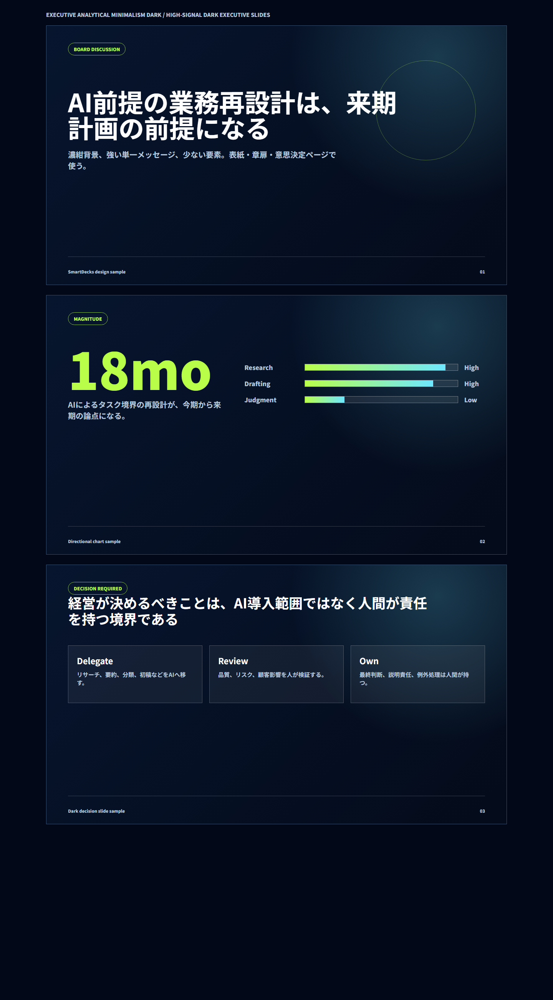
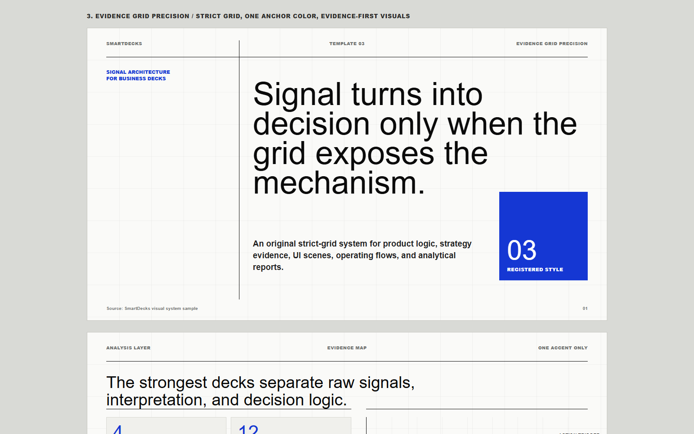
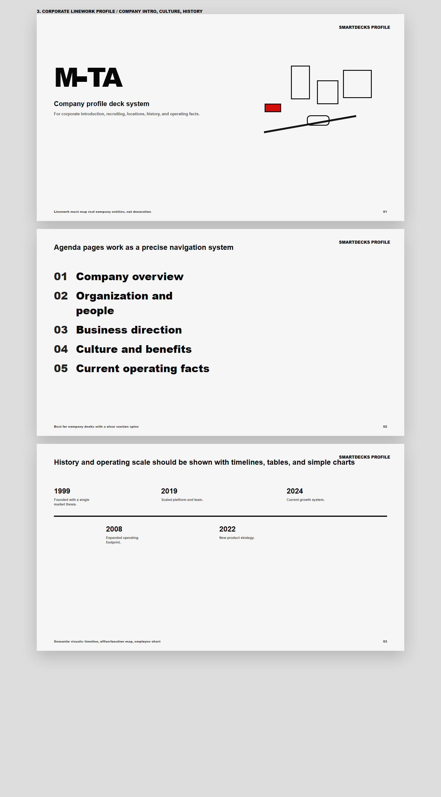
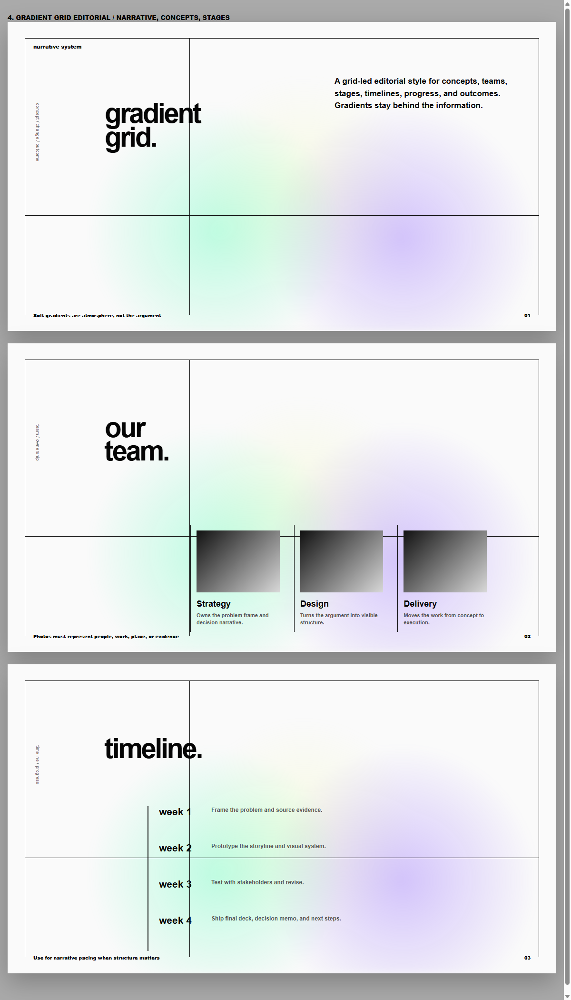
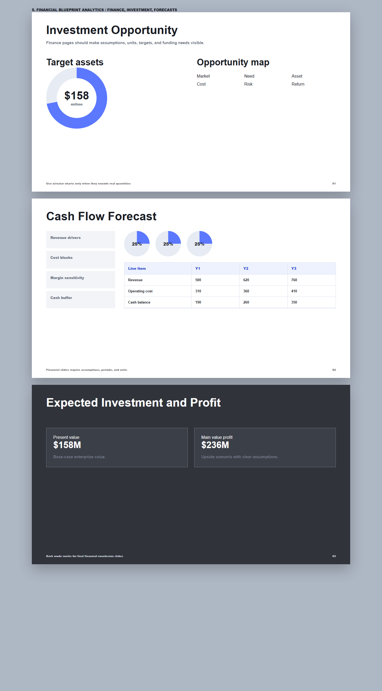
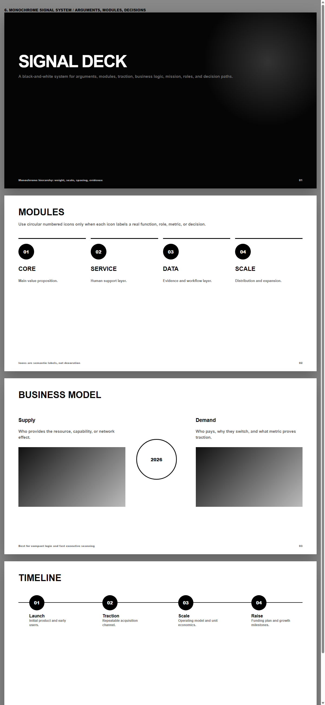
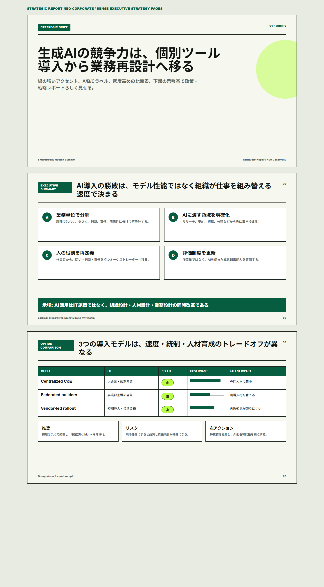
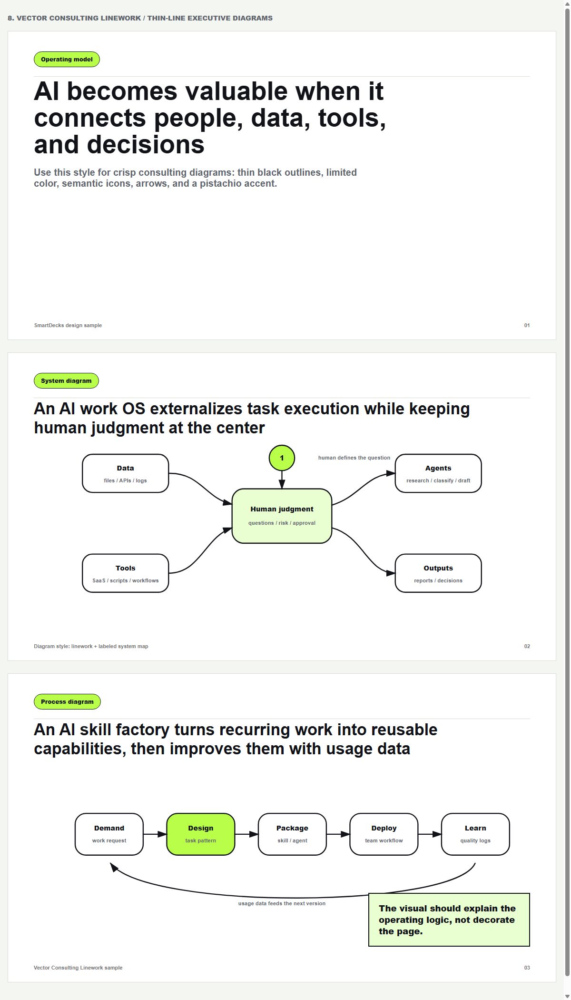
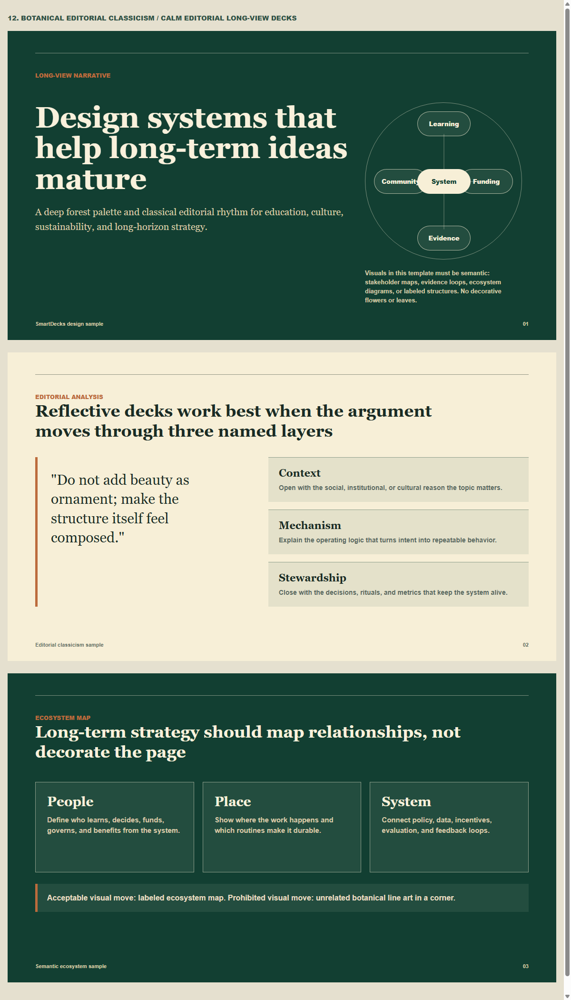

Understand
Audience, objective, source quality, constraints, and the message each slide must carry.
AI skill for strategy decks and visual reports
SmartDecks is a Codex skill that converts notes, URLs, research, PDFs, and structured data into storylines, exhibit plans, HTML slides, and presentation-ready design systems.
The skill is designed as an orchestrator: it reads messy source material, builds the logic, selects charts and diagrams, applies a numbered visual template, and performs final layout QA.
Audience, objective, source quality, constraints, and the message each slide must carry.
Executive summary, storyline, action titles, evidence, implications, and appendix logic.
Charts, matrices, timelines, icon maps, process flows, and consulting-style explanatory diagrams.
HTML or PPTX-ready output with source footers, page numbers, responsive checks, and overflow QA.
Ask for 窶徼emplate 4窶・or 窶懊ユ繝ｳ繝励Ξ4窶・and SmartDecks can apply the matching visual language. Templates are not fixed use cases; choose by information pattern and visual grammar.


Dark analytical dashboards for high-contrast board readouts.
Open sample
Strict evidence grid, one anchor color, evidence images, UI scenes, and analytical layouts.
Open sample
Precise monochrome linework for entities, milestones, roles, and operating facts.
Open sample
Grid-led editorial rhythm for narrative arcs, concepts, stages, and outcomes.
Open sample
Metric-first layouts for assumptions, scenarios, forecasts, economics, and resources.
Open sample
High-signal black-and-white layouts for arguments, modules, models, and decisions.
Open sample
Formal strategy-report rhythm with dense but readable evidence.
Open sample

Rounded modules, bold labels, playful structure, and clear hierarchy.
Open sample


Elegant editorial pages for reflective narratives and soft strategy.
Open sampleSmartDecks is more than a renderer. It contains rules for storyline design, chart grammar, consulting diagrams, visual assets, template selection, HTML/PPTX rendering, and final QA.
Turns source material into executive summaries, issue trees, recommendations, and next actions.
Chooses charts, matrices, roadmaps, scorecards, process diagrams, and icon maps based on the content.
Checks overflow, object overlap, weak titles, missing sources, excessive text, contrast, and template consistency.
You do not need to memorize template names. Ask for the template list, then refer to a number in your next request.
[$smart-decks] Show template list.
[$smart-decks] Use template 4.
Turn this research note into a 12-slide HTML strategy deck.
Use charts where possible, add icons and source footers, then QA for overflow.SmartDecks is an independent project. It is not affiliated with McKinsey, BCG, Anthropic, or OpenAI. Public strategy reports were used only as design-quality references.